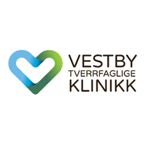
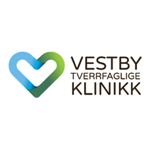
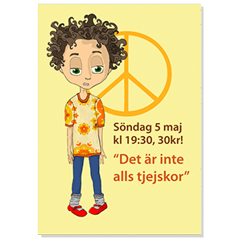
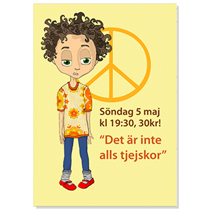
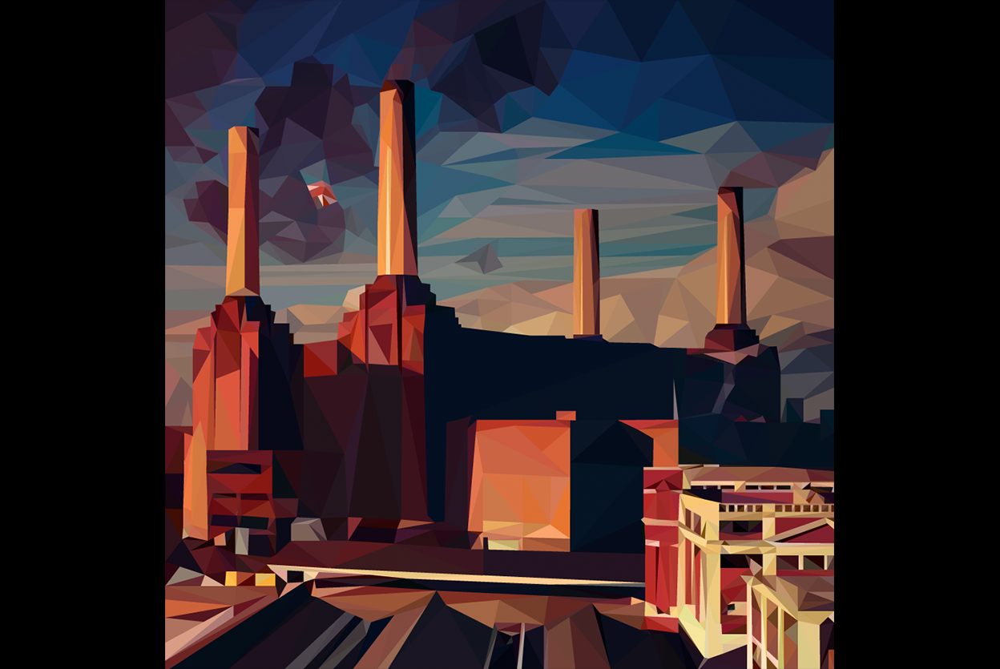
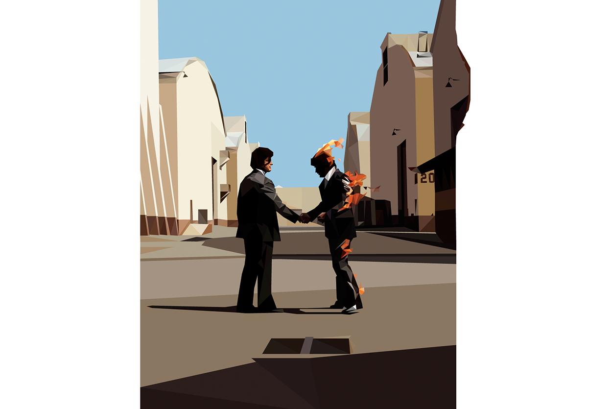
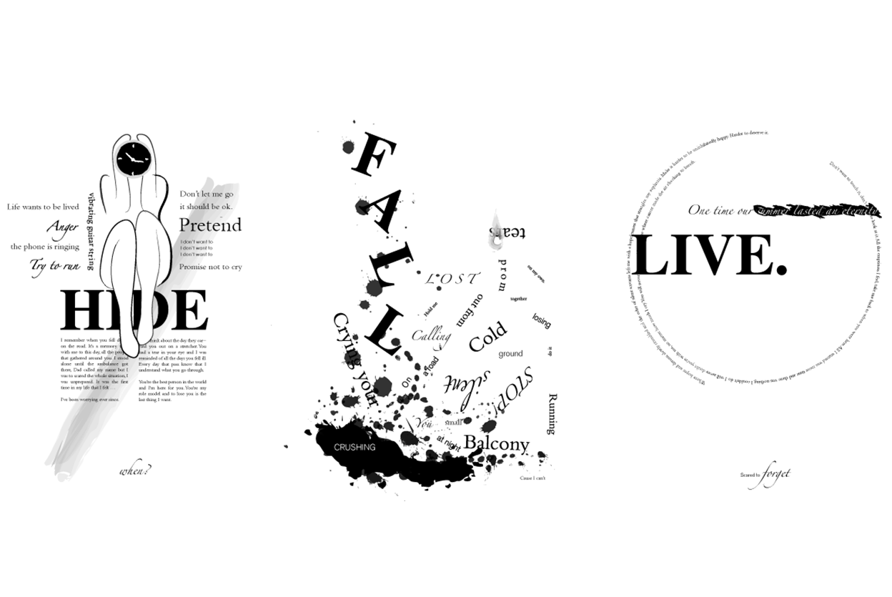

 


Filmaffischer
Stubinen - studenternas filmförening, 2013

Albumomslag
Polygonbild av Lalehs album Sjung, 2016.
Albumomslag
Illustration, 2015
Polygonbild av ett Pink Floyds Animals.

Albumomslag
Illustration, 2015
Polygonbild av Pink Floyds Wish You Were Here.

Café- och restaurangmärkning
Hemsida

Kinda Ostkaka
Linköpings Universitet, 2014
Earth Hour & Illegal wildlife trade
WWF, 2013
Hemsida
Vestby Klinikk, 2014
Lägerlogos
Logotyper
Illustrationer, 2016